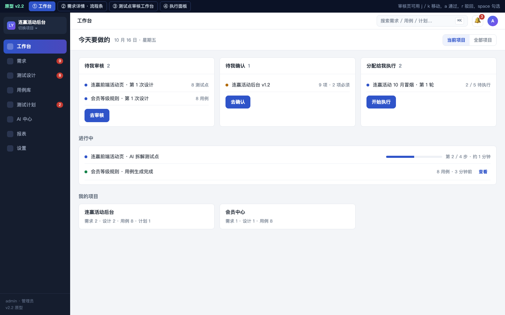
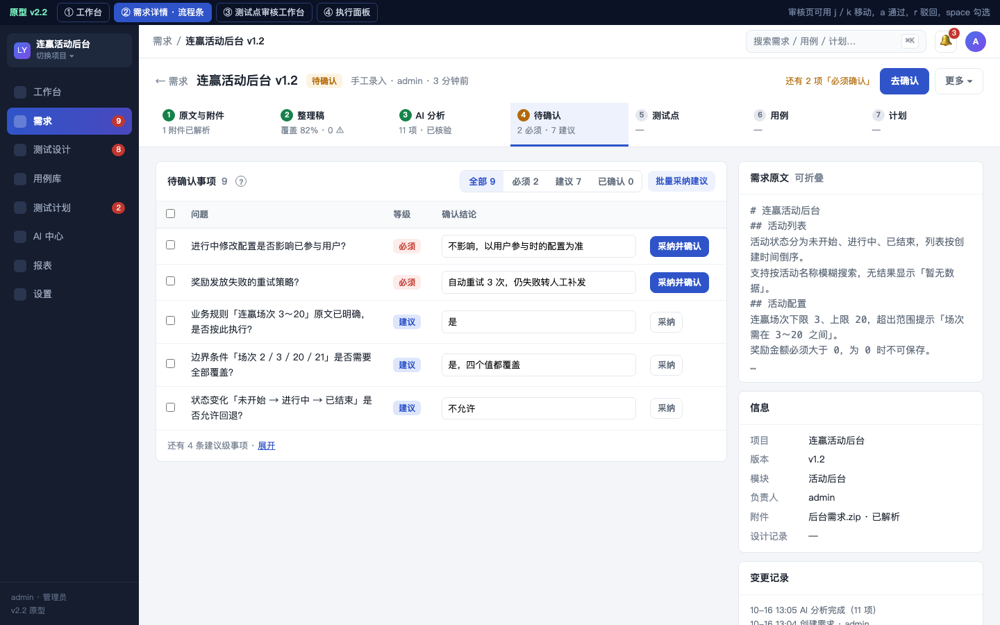
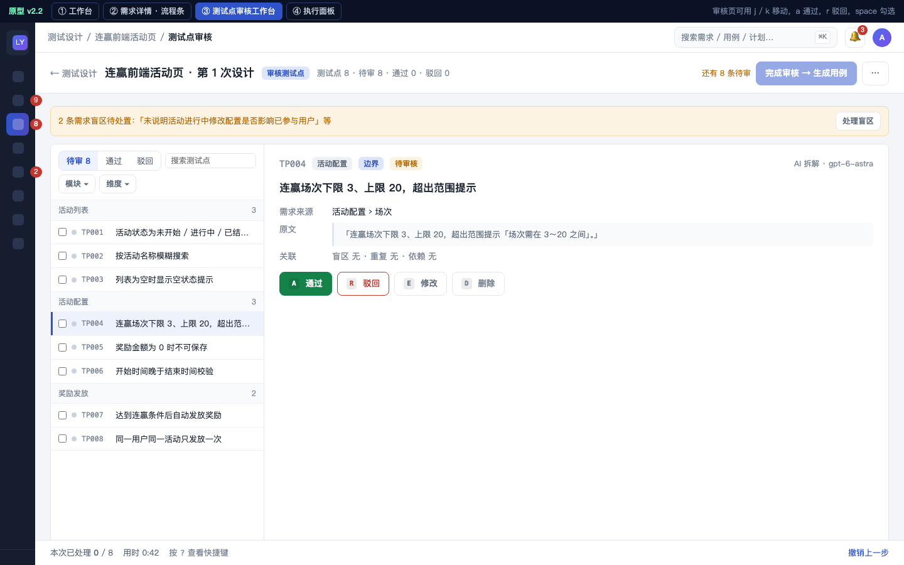
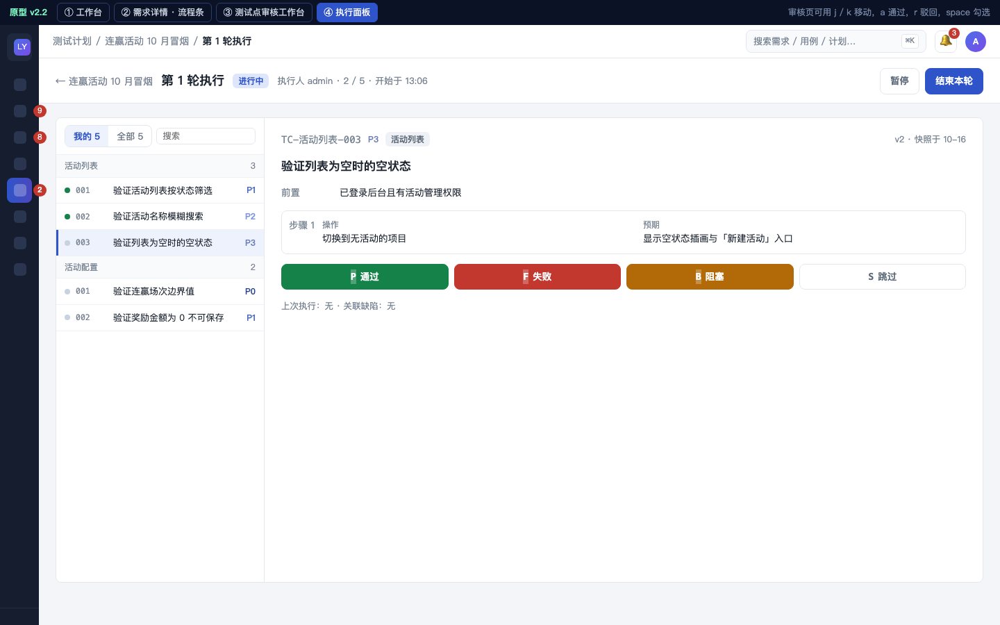

对应 docs/前端交互设计方案_v2.2.md（2026-10-16）。按「用户怎么走」画：信息架构、需求主线与流程条、页面跳转与路由、三个工作台的键盘交互、反馈与后台任务。可点击原型见 design/前端交互原型_v2.2.html。
flowchart LR classDef pg fill:#dfeee9,stroke:#1f6f5f,color:#1b2a26 classDef sys fill:#eceae4,stroke:#8a877d,color:#2a2a26 classDef old fill:#ffffff,stroke:#c9c6bd,color:#6b6f66,stroke-dasharray:4 3 P["项目切换器 ▾
所有列表默认在当前项目内"]:::sys P --> WB["工作台
我的待办（跨项目）"]:::pg P --> RQ["需求
列表 + 详情"]:::pg P --> DS["测试设计
按需求分组的设计记录"]:::pg P --> CL["用例库
正式用例 · 回收站"]:::pg P --> PL["测试计划
计划 + 执行 · 分配给我"]:::pg P --> AI["AI 中心
任务 · 日志 · 用量 · 知识库 · Prompt · 规则与记忆 · 评测"]:::pg P --> RP["报表"]:::pg P --> ST["设置（管理员）
用户 · 模型 · 访问控制 · 操作日志"]:::pg RQ --> RD["需求详情页签
原文 / 整理稿 / 分析 / 待确认 / 测试设计 / 追溯"]:::pg DS --> TP["测试点审核工作台"]:::pg DS --> TC["用例审核工作台"]:::pg PL --> RUN["执行面板"]:::pg O1["原：任务列表"]:::old -.并入.-> DS O2["原：执行任务"]:::old -.并入.-> PL O3["原：AI 任务中心 / 知识库 / Prompt / 学习规则 / 记忆 / 评测"]:::old -.并入页签.-> AI O4["原：操作日志 / 用户管理 / 模型配置"]:::old -.并入页签.-> ST O5["原：项目管理"]:::old -.-> P
需求详情顶部固定流程条，点哪步切哪步；当前应做的一步高亮，主按钮随阶段变化，阻塞原因写在被禁用的主按钮旁并可点。「任务」对用户隐藏，一次发起就是一条「第 N 次设计」记录。
flowchart TB classDef st fill:#fbe9d5,stroke:#a3622a,color:#3a2410 classDef act fill:#e7e3f6,stroke:#5b4a9e,color:#241f36 classDef blk fill:#f6dada,stroke:#a33a3a,color:#3a1414 classDef pg fill:#dfeee9,stroke:#1f6f5f,color:#1b2a26 S1["① 原文与附件"]:::st --> A1["主按钮：提取整理稿"]:::act --> S2["② 整理稿
⚠ 置顶 · 逐条 a / e / d
覆盖率 82%"]:::st S2 --> A2["主按钮：AI 分析"]:::act --> S3["③ AI 分析
11 项折叠成 5 组 · 行内编辑"]:::st S3 --> S4["④ 待确认
AI 结论预填 · 采纳并确认 · 批量采纳"]:::st S4 --> B1{"必须确认项
全部确认？"}:::blk B1 -->|否：按钮旁写「还有 2 项必须确认 → 去确认」| S4 B1 -->|是| A4["主按钮：发起测试设计
一行弹层：默认模型 · 先审测试点 · 高级设置 ▾"]:::act A4 --> S5["⑤ 测试点
第 N 次设计 · 待审 8"]:::st S5 --> W1["测试点审核工作台"]:::pg --> A5["完成审核 → 生成用例"]:::act A5 --> S6["⑥ 用例"]:::st --> W2["用例审核工作台"]:::pg --> A6["通过 → 入用例库"]:::act A6 --> S7["⑦ 计划"]:::st --> W3["执行面板"]:::pg SIDE["右侧栏固定：原文 · 附件 · 变更记录 · 负责人 / 版本 / 模块"]:::sys classDef sys fill:#eceae4,stroke:#8a877d,color:#2a2a26 SIDE -.- S4
flowchart TB classDef pg fill:#dfeee9,stroke:#1f6f5f,color:#1b2a26 classDef act fill:#e7e3f6,stroke:#5b4a9e,color:#241f36 classDef sys fill:#eceae4,stroke:#8a877d,color:#2a2a26 WB["工作台 #/
待我审核 · 待我确认 · 分配给我执行 · 进行中 · 最近完成"]:::pg WB -->|卡片「去审核」定位第一条待处理| TP WB -->|卡片「去确认」| RD4 WB -->|卡片「开始执行」| RUN WB -->|进行中 · 第 2/4 步| AIT RL["需求列表 #/p/LY/requirements?status=&q=
列：标题 · 状态 · 阶段缩略 · 待办数 · 负责人 · 更新"]:::pg RL -->|行点击| RD["需求详情 #/p/LY/requirements/:id/:tab
流程条 + 左主区右侧栏"]:::pg RL -->|勾选 → 底部批量条| BB["批量确认分析结果 · 合并发起设计"]:::act RD --> RD4["待确认 …/confirm"]:::pg RD -->|主按钮：发起测试设计| TP RD -->|流程条 ⑤ ⑥| TP & TC DL["测试设计 #/p/LY/design
按需求分组的设计记录"]:::pg --> TP["测试点审核 #/p/LY/design/:id/points?sel=TP004"]:::pg TP -->|完成审核 → 生成用例| TC["用例审核 #/p/LY/design/:id/cases?tab=pending"]:::pg TC -->|通过| CL["用例库 #/p/LY/cases?module=&priority=
行点击 → 右侧抽屉：编辑 / 版本 / 执行记录 / 加入计划"]:::pg CL -->|加入计划| PD["计划详情 #/p/LY/plans/:id
页签：用例 · 执行轮次 · 统计"]:::pg PD -->|开始执行| RUN["执行面板 #/p/LY/plans/:id/run/:run"]:::pg AIT["AI 中心 #/ai/tasks · #/ai/calls/:id · #/ai/prompts
行内重试 · 日志详情右侧抽屉 上一条 / 下一条"]:::pg STG["设置 #/settings/users"]:::pg G["全局：⌘K 搜索 · g w / g r / g d / g c / g p 跳转 · 🔔 后台任务完成 / 分配给我 / 待确认"]:::sys G -.-> WB & RL & DL & CL & PD & AIT & STG
stateDiagram-v2
direction LR
[*] --> 选中一条: 进入即定位第一条待审（?sel=）
选中一条 --> 选中一条: j / k 上下移动
选中一条 --> 已通过: a 通过（乐观更新，行变绿，不弹 toast）
已通过 --> 选中一条: 自动前进到下一条
已通过 --> 撤销条: 「已通过 TP004 · 撤销」停留 8 秒，连续操作合并成「已通过 5 条 · 撤销」
撤销条 --> 选中一条: 点撤销 → 回滚
选中一条 --> 驳回展开: r 驳回（详情区内展开，不弹窗）
驳回展开 --> 驳回展开: 单击类型胶囊 · 填原因 / 要求
驳回展开 --> 已驳回: ⌘⏎ 提交
驳回展开 --> 选中一条: Esc 收起
已驳回 --> 选中一条: 自动前进；用例审核时顶部出现「AI 修改驳回用例」提示条（含前后对比）
选中一条 --> 行内编辑: e 修改（标题 / 步骤表格直接改，保存即新版本）
行内编辑 --> 选中一条: 保存 / Esc
选中一条 --> 已删除: d 删除（入回收站）
已删除 --> 撤销条
选中一条 --> 多选: space 勾选 · ⇧A 全选
多选 --> 批量条: 底部批量条：已选 3 · 通过 / 驳回 / 改模块 / 删除 / 取消
批量条 --> 选中一条: 执行后合并一条撤销 toast
选中一条 --> 完成: 「完成审核 → 生成用例」（待审 0 时可用，否则按钮旁写原因）
完成 --> [*]
note right of 选中一条
详情区：需求来源原句 · 盲区关联 · 重复 · 依赖
顶部提醒条「2 条盲区待处置 → 处理」
底部状态条「本次已处理 12 / 8 分钟」
? 显示快捷键表 · 脑图视图是列表区的切换按钮
end note
stateDiagram-v2
direction LR
[*] --> 当前用例: 第 1 轮 · 执行人 · 2 / 5
当前用例 --> 通过: P
当前用例 --> 阻塞: B
当前用例 --> 跳过: S
当前用例 --> 失败原因: F → 展开原因输入与截图拖放
失败原因 --> 失败: 记录
通过 --> 下一条: 自动跳转
阻塞 --> 下一条
跳过 --> 下一条
失败 --> 下一条
下一条 --> 当前用例: 还有未执行
下一条 --> 结束本轮: 全部执行完 → 统计页签
结束本轮 --> [*]
note right of 当前用例
左列表：● 已执行 ○ 未执行 ◀ 当前
右详情：前置 · 步骤 / 预期并排 · 备注 / 附件
入口：计划详情「开始执行」或工作台卡片「开始执行」
end note
sequenceDiagram
autonumber
participant U as 用户
participant V as 页面（局部刷新）
participant S as 后端
participant N as 顶栏铃铛 / 工作台「进行中」
U->>V: 点「发起测试设计」（使用上次设置）
V->>V: 乐观更新：流程条 ⑤ 变「AI 拆解中 · 第 1/4 步」
V->>S: POST 发起设计
S-->>V: 已受理（设计记录 id）
U->>V: 去别的页面
loop 全局 10 秒轮询（只拉「我的进行中任务」，后续换 SSE）
V->>S: GET 我的进行中任务
S-->>V: 第 2/4 步 · 预计 1 分钟
V->>N: 更新步骤与预计时间
end
S-->>V: 完成 · 8 测试点
V->>N: 角标 +1「连赢前端活动页 · 8 测试点待审」
U->>N: 点通知
N->>V: 跳转 #/p/LY/design/:id/points?sel=TP001
Note over V: 失败：行内「重试」，错误全文在展开行；接口错误用页面顶部横幅 + 重试，不只靠 toast
Note over V: 加载：超过 300ms 才显示骨架屏；空状态 = 图标 + 一句话 + 一个动作按钮
| 页面 | URL |
|---|---|
| 工作台 | #/ |
| 需求列表 | #/p/LY/requirements?status=designing&q=连赢 |
| 需求详情某页签 | #/p/LY/requirements/67cc1c74/analysis |
| 测试点审核，定位到某条 | #/p/LY/design/97571bd28eac/points?sel=TP004 |
| 用例审核 | #/p/LY/design/bdbaabc721b1/cases?tab=pending |
| 用例库 | #/p/LY/cases?module=活动配置&priority=P0 |
| 计划详情 / 执行面板 | #/p/LY/plans/3518fc5a · #/p/LY/plans/3518fc5a/run/c23c115e |
| AI 中心 | #/ai/tasks · #/ai/calls/<id> · #/ai/prompts |
| 设置 | #/settings/users |
| 层级 | 用途 | 每页数量 |
|---|---|---|
| 主按钮（实心） | 当前阶段唯一的下一步 | 1 |
| 次按钮（描边） | 常用但非主线 | ≤ 2 |
| 文字按钮 | 行内动作（悬停才显示） | 行内 ≤ 2 |
| 「⋯」菜单 | 其余 + 危险动作（红字、最底、分隔线隔开） | 1 |
可逆操作（入回收站、通过、驳回）直接执行 + 8 秒撤销；不可逆操作（彻底删除、清空）弹确认并要求输入名称。弹窗只用于 ≤ 5 个字段的短表单与不可逆确认，更多字段用右侧抽屉；所有弹窗 Esc 关闭、⌘⏎ 提交、首个输入框自动聚焦；禁用按钮旁必须写原因。



